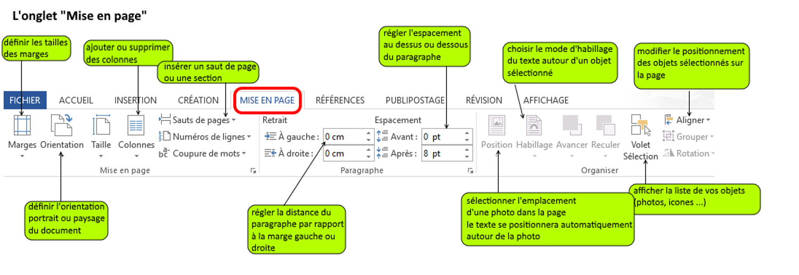
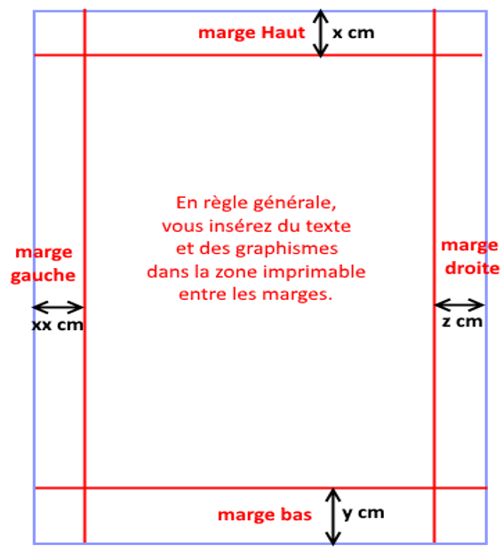
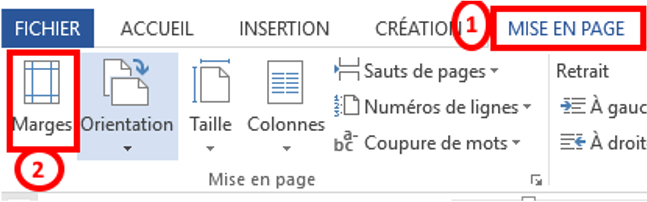
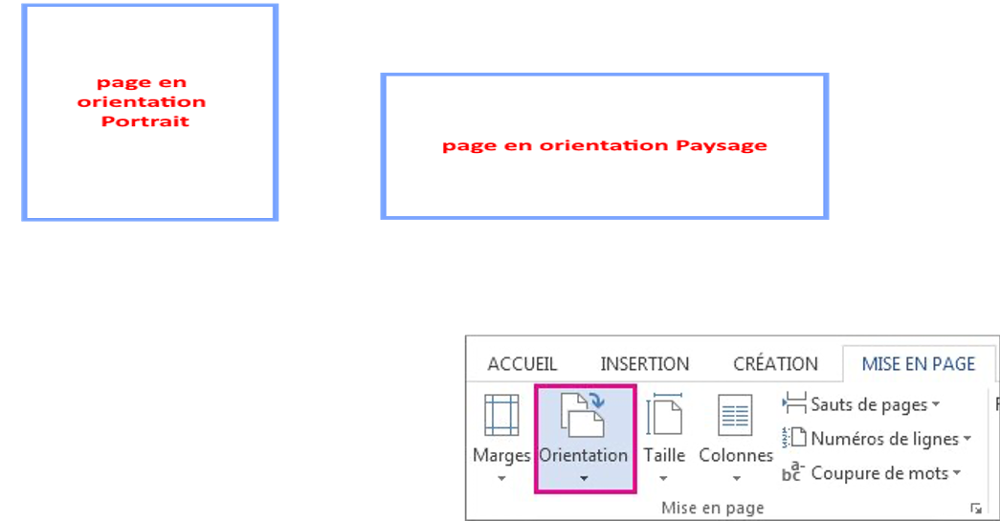
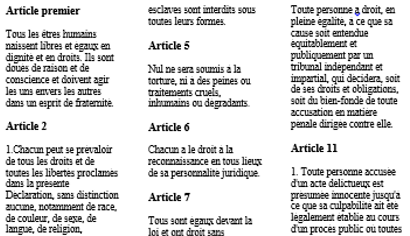
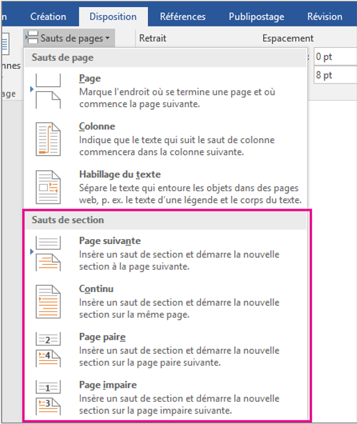

Mise en page
Configurer les marges, l’orientation, les colonnes, les sauts de page et les sections afin de produire un document Word clair, professionnel et adapté à son contenu.
Objectifs d’apprentissage
La mise en page agit sur la structure physique des pages. Elle ne change pas seulement l’apparence du texte : elle détermine comment le contenu occupe la feuille, où commence une nouvelle page et quelles parties du document peuvent avoir une présentation différente.
- identifier les principales commandes de l’onglet Mise en page ;
- choisir et personnaliser les marges ;
- passer d’une orientation Portrait à Paysage ;
- présenter un texte sur une ou plusieurs colonnes ;
- insérer un saut de page au bon endroit ;
- utiliser les sauts de section pour appliquer des mises en page différentes dans un même document.
1. L’onglet Mise en page

L’onglet Mise en page de Microsoft Word regroupe les outils qui contrôlent la disposition du contenu sur la page. Selon la version de Word, certains noms ou regroupements peuvent varier légèrement, mais les fonctions principales restent les mêmes.
Commandes à connaître
| Commande | Rôle | Exemple d’utilisation |
|---|---|---|
| Marges | Définit l’espace entre le contenu et les bords. | Augmenter l’espace blanc d’un rapport. |
| Orientation | Choisit le sens de la page. | Mettre un grand tableau en Paysage. |
| Colonnes | Répartit le texte verticalement. | Créer une brochure ou un article. |
| Sauts | Contrôle le passage à une autre page ou section. | Commencer un chapitre sur une nouvelle page. |
2. Marges


Les marges sont les espaces vides situés entre le contenu du document et les quatre bords de la page : haut, bas, gauche et droite. Elles améliorent la lisibilité, facilitent l’impression et laissent de la place pour la reliure ou les annotations.
Choisir une marge prédéfinie
- Ouvrez l’onglet Mise en page.
- Cliquez sur Marges.
- Choisissez un modèle proposé : Normales, Étroites, Moyennes, Larges, etc.
- Vérifiez visuellement le résultat dans le document.
Créer des marges personnalisées
Lorsque les modèles ne conviennent pas, utilisez Marges personnalisées. Vous pouvez alors saisir séparément les valeurs du haut, du bas, de gauche et de droite.
3. Orientation

L’orientation détermine le sens de la feuille. Word propose deux orientations : Portrait, plus haute que large, et Paysage, plus large que haute.
Rapports, lettres, CV, devoirs, documents principalement textuels.
Grands tableaux, calendriers, graphiques larges, schémas horizontaux.
- Ouvrez Mise en page.
- Cliquez sur Orientation.
- Sélectionnez Portrait ou Paysage.
Attention : appliquée directement, l’orientation peut modifier plusieurs pages. Pour mettre seulement une partie du document en Paysage, il faut généralement isoler cette partie avec des sauts de section.
4. Colonnes

Les colonnes divisent horizontalement la zone de texte en plusieurs bandes verticales. Le texte remplit d’abord la première colonne puis continue dans la suivante. Cette présentation est fréquente dans les journaux, bulletins, brochures et fiches d’information.
Appliquer des colonnes
- Sélectionnez le texte concerné si vous ne souhaitez pas modifier tout le document.
- Ouvrez Mise en page > Colonnes.
- Choisissez Une, Deux, Trois, Gauche, Droite ou les options avancées.
- Relisez le document pour vérifier que les titres, images et paragraphes sont bien répartis.
Les options avancées permettent notamment d’ajuster la largeur des colonnes, leur espacement et, selon le besoin, d’ajouter une ligne séparatrice.
5. Sauts de page
Un saut de page force le contenu qui suit à commencer au début de la page suivante. Il est préférable à une série de lignes vides créées avec la touche Entrée, car il reste stable lorsque le texte précédent est modifié.
Deux méthodes courantes
- Insertion > Saut de page : commande explicite dans le ruban.
- Raccourci clavier : Ctrl + Entrée sur Windows ; selon la configuration de Word sur Mac, utilisez la commande de saut de page ou le raccourci affiché dans le menu.
Saut manuel et saut automatique
| Type | Principe |
|---|---|
| Automatique | Word passe naturellement à la page suivante lorsque la page actuelle est remplie. |
| Manuel | L’utilisateur impose un changement de page à un endroit précis. |
6. Sections

Une section est une partie indépendante du document à laquelle Word peut appliquer certains paramètres de mise en page spécifiques. Les sauts de section sont indispensables lorsqu’un même document doit combiner plusieurs orientations, plusieurs configurations de colonnes ou d’autres réglages distincts.
Types de sauts de section
| Type | Effet | Quand l’utiliser ? |
|---|---|---|
| Page suivante | Commence la nouvelle section sur la page suivante. | Nouveau chapitre avec une mise en page différente. |
| Continu | Crée une nouvelle section sur la même page. | Passer temporairement d’une à deux colonnes sur une page. |
| Page paire | Commence la section sur la prochaine page paire. | Documents structurés pour impression recto verso. |
| Page impaire | Commence la section sur la prochaine page impaire. | Faire débuter un chapitre sur une page de droite dans certains ouvrages. |
Exemple : une seule page en Paysage
- Placez le curseur avant la page concernée.
- Insérez un saut de section – Page suivante.
- Placez ensuite le curseur à la fin du contenu à isoler et insérez un second saut de section.
- Cliquez dans la section centrale.
- Choisissez Mise en page > Orientation > Paysage.
- Vérifiez que les pages avant et après restent en Portrait.
Activité pratique guidée
Objectif : créer un document de trois pages qui combine plusieurs techniques de mise en page.
Consigne
- Page 1 – Introduction : orientation Portrait, marges normales, un titre et deux paragraphes.
- Page 2 – Article : ajoutez un titre sur toute la largeur puis présentez le texte en deux colonnes.
- Page 3 – Tableau : placez cette partie en Paysage et ajoutez un tableau suffisamment large pour justifier cette orientation.
- Utilisez les sauts de page ou de section appropriés pour conserver la structure demandée.
- Affichez les marques ¶ et vérifiez l’emplacement de vos sauts.
Critères de réussite
- ✓ La première partie reste en Portrait.
- ✓ Le texte de la deuxième partie est correctement réparti en deux colonnes.
- ✓ Seule la partie contenant le tableau est en Paysage.
- ✓ Aucun changement de page n’est simulé par une longue série de touches Entrée.
- ✓ Le document reste lisible et équilibré.
Synthèse du cours
| Besoin | Outil à privilégier |
|---|---|
| Modifier l’espace autour du contenu | Marges |
| Afficher un contenu très large | Orientation Paysage |
| Créer une présentation de type journal | Colonnes |
| Commencer volontairement sur la page suivante | Saut de page |
| Appliquer des réglages différents à plusieurs parties | Sauts de section |